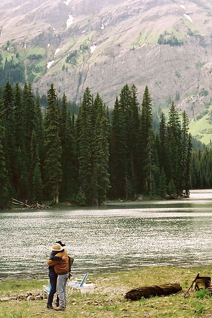
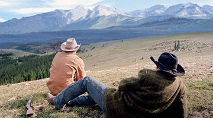

Le secret de Brokeback Mountain
ANG LEE
Durant l’été 1963 au Wyoming, deux cow-boys, Jack et Ennis sont engagés pour garder ensemble un troupeau de moutons à Brokeback Mountain. Isolés dans la nature, leur complicité se transforme en une attirance inattendue. A la fin de l’été, les routes des deux hommes se séparent. Jack et Ennis vont essayer de mener une vie normale : se marier, fonder une famille, mais quand ils se revoient quatre ans plus tard un seul regard suffit pour raviver l’amour né à Brokeback Mountain. Durant des années, les deux hommes continuent de se voir et rien ne semble pouvoir affaiblir l’amour qu’ils ont l’un pour l’autre. Cependant, un jour Ennis apprend par courrier que Jack est mort, cette nouvelle le met dans une tristesse profonde et c’est à ce moment, à la fin du film qu’est jouée la musique «The Wings»
cliquez pour voir le trailer
Gustavo Santaolalla
« the wings »
15 mars 2022, performance au royce hall à los angeles
Gustavo Santaolalla est un chanteur, compositeur et musicien argentin de 71 ans. Il a commencé sa carrière musicale en 1967 en fondant un groupe de rock-folk psychédélique nommé «Arco Harris», bien que son style musical ait évolué avec le temps, on retrouve toujours des influences minimalistes et mystiques dans sa musique. Santaolalla a remporté plusieurs oscars pour la meilleure musique de film notamment grâce au long métrage « Le secret de Brokeback Mountain»